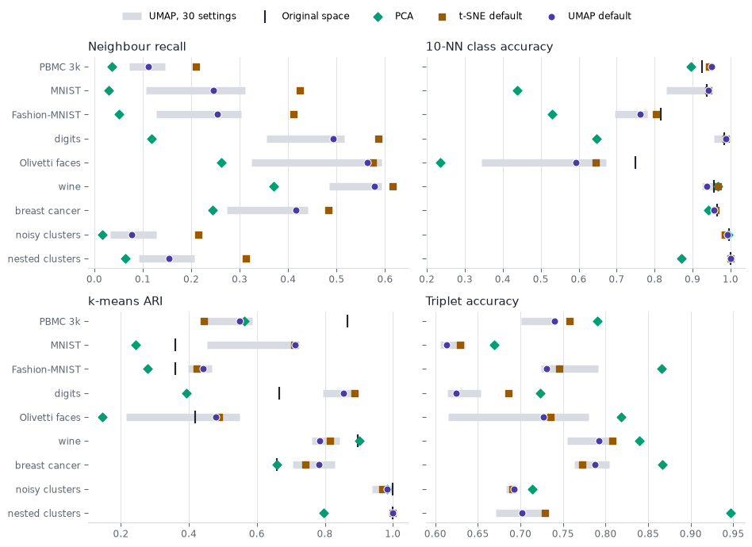

Code
PANELS = [
("neighbor recall", "Neighbour recall"),
("kNN accuracy", "10-NN class accuracy"),
("k-means ARI", "k-means ARI"),
("triplet accuracy", "Triplet accuracy"),
]
fig, axes = plt.subplots(2, 2, figsize=(10, 7.2), sharey=True)
y = np.arange(len(ORDER))
for ax, (col, title) in zip(axes.flat, PANELS):
ax.hlines(y, worst[col], best[col], color=RULE, lw=7, zorder=1, label="UMAP, 30 settings")
if col in ("kNN accuracy", "k-means ARI"):
ax.scatter(orig[col], y, marker="|", s=160, color=INK, lw=1.6, zorder=2,
label="Original space")
ax.scatter(pca[col], y, marker="D", s=34, color=C_PCA, zorder=3, label="PCA")
ax.scatter(tsne[col], y, marker="s", s=34, color=C_TSNE, zorder=3, label="t-SNE default")
ax.scatter(default[col], y, marker="o", s=46, color=C_UMAP, edgecolor="white", lw=0.8,
zorder=4, label="UMAP default")
ax.set_title(title, color=INK, fontsize=11, loc="left")
ax.set_yticks(y, ORDER)
ax.tick_params(colors=MUTED, labelsize=9)
ax.spines[["top", "right", "left"]].set_visible(False)
ax.spines["bottom"].set_color(RULE)
ax.grid(axis="x", color=RULE, lw=0.6)
ax.set_axisbelow(True)
axes[0, 0].invert_yaxis()
handles, labels = axes[0, 1].get_legend_handles_labels()
fig.legend(handles, labels, loc="upper center", ncol=5, frameon=False, fontsize=9,
bbox_to_anchor=(0.5, 1.0))
fig.tight_layout(rect=(0, 0, 1, 0.95))
Path("figures").mkdir(exist_ok=True)
fig.savefig("figures/verdict.png", dpi=150, bbox_inches="tight")
plt.show()